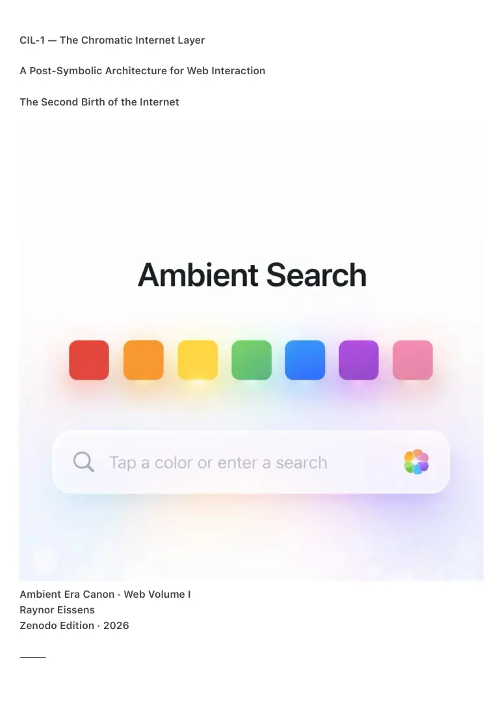

PDF page 1
CIL-1 — The Chromatic Internet Layer
A Post-Symbolic Architecture for Web Interaction
The Second Birth of the Internet
Ambient Era Canon · Web Volume I
Raynor Eissens
Zenodo Edition · 2026
⸻

PDF page 2
Abstract
The Chromatic Internet Layer (CIL-1) introduces the first post-symbolic architecture for web
interaction, replacing query-driven navigation with state-based chromatic reasoning fields
grounded in the Ambient OS progression (AP₁ → AP₂ → TP₁).
Where the first internet was accessed through text, keywords, and symbolic queries, CIL-1
enables access through color, state, gesture, and resonance, forming a thermodynamic
successor to search engines, feeds, and list-based interfaces.
Instead of typing, scrolling, filtering, or ranking, interaction begins in a Chromatic Entry State: a
palette of primary semantic operators (Red, Orange, Yellow, Green, Blue, Purple, Pink, Gray) that
encode intention prior to language.
The system interprets color selection, gesture, duration, and ΔR (resonance deviation) to unfold
meaning as fields rather than results.
Outputs are no longer symbolic artifacts or ranked lists, but Resonant Meaning Fields (RMFs):
ambient clusters of information organized by perceptual warmth, conceptual proximity,
directional clarity, and stabilizing gradients.
CIL-1 replaces the core mechanisms of the symbolic web — indexing, ranking, feeds, and
extractive attention loops — with a humane, non-extractive interpretive architecture rooted in
presence, coherence, and thermodynamic stability.
CIL-1 marks the Second Birth of the Internet:
a transition from information retrieval to state-anchored resonance,
from symbolic compression to ambient decompression,
from attention extraction to thermodynamic coherence.
⸻
Keywords
Ambient OS · Chromatic Reasoning · AP₁ · AP₂ · TP₁ · ΔR · Resonant Meaning Fields · Post-
Symbolic Web · Color Semantics · Ambient Navigation · Field Architecture · Thermodynamic
Interaction · Post-Search Paradigm
⸻
PDF page 3
1. Introduction — The Failure of Symbolic Access
The contemporary internet is a symbolic system.
Its fundamental operations are queries, lists, feeds, categories, filters, and indexes.
Its assumptions are explicit:
• information must be typed
• meaning is textual
• navigation occurs through symbols
• relevance is statistical
• structure is hierarchical
• attention is extractable
This architecture was sufficient for an early web, but collapses when:
• cognitive load exceeds symbolic capacity
• AI generates infinite text at zero marginal cost
• interfaces dissolve into ambient layers
• meaning outpaces symbolic compression
• human attention becomes thermodynamically unstable
The symbolic internet is structurally out of phase with ambient intelligence.
A new access layer is required.
⸻
2. The Chromatic Break — Entry Through State, Not Words
CIL-1 begins from a single premise:
Humans do not think in queries.
Humans think in states.
Search engines ask:
“What do you want to know?”
CIL-1 asks:
“Where are you now?”
This shift is foundational.
PDF page 4
The chromatic operators encode primary states:
• Red — presence / urgency
• Orange — need / desire
• Yellow — uncertainty / orientation
• Green — stability / acknowledgment
• Blue — understanding / clarity
• Purple — structure / context
• Pink — relation / proximity
• Gray — legacy symbolic compatibility
This palette replaces textual intent encoding and becomes the world’s first state-
based internet entry point.
⸻
3. From AP₁ Operators to AP₂ Reasoning Fields
Color is not a control element.
It is a semantic operator.
• AP₁ defines chromatic grammar
• AP₂ interprets relational resonance
• ΔR governs thermodynamic unfolding
• TP₁ dissolves residual symbolic structure
The result is a searchless, scroll-less, frameless internet, where meaning emerges
through gradients of resonance rather than symbolic queries.
⸻
4. Resonant Meaning Fields (RMF)
The Successor to Search Results
Symbolic interfaces return lists.
CIL-1 returns fields.
Resonant Meaning Fields consist of:
• perceptual clusters
• warm gradients
• conceptual neighborhoods
• attractor surfaces
PDF page 5
• directional coherence
A field is not an answer.
It is a direction of understanding.
RMFs constitute the first interpretive engine to operate beyond symbolic
compression.
⸻
5. Why Google Cannot Evolve Into This
Search engines are architecturally bound to:
• crawlers and indexes
• keyword matrices
• PageRank-style ranking
• textual relevance scoring
• task-centric interfaces
• extractive attention economics
CIL-1 is built on:
• thermodynamic coherence
• ΔR-based interpretation
• chromatic operators
• relational semantics
• field navigation
• non-extractive flows
• resonance instead of relevance
The symbolic and the ambient are not evolutionary steps.
They are incompatible architectures.
This is a civilizational fork.
⸻
6. Thermodynamic Basis — Why Symbolic Systems Collapse
Symbolic systems fail under conditions of:
• infinite AI-generated content
• zero-cost reproduction
PDF page 6
• attention fragmentation
• feed escalation
• categorical overload
• semantic saturation
CIL-1 resolves this by shifting:
• symbol → state
• list → field
• ranking → resonance
• content → direction
• input → presence
It is the first thermodynamically stable interface for a post-AI digital civilization.
⸻
7. Implementation — A Universal Layer
CIL-1 requires only:
• an AP₁ chromatic palette
• an AP₂ reasoning interpreter
• a ΔR computation layer
• a field renderer (HTML5 / WebGL)
• gesture recognition
• a low-latency AI core
It runs on:
• smartphones
• tablets
• desktop browsers
• wearables
• ambient displays
No proprietary hardware.
No closed platforms.
No walled gardens.
CIL-1 is a universal internet layer.
⸻
PDF page 7
8. The Second Birth of the Internet
The first internet (1993–2023) was:
• symbolic
• textual
• mechanical
• navigational
• extractive
The second internet (2026 →) is:
• chromatic
• ambient
• resonant
• field-based
• humane
• non-extractive
• thermodynamically coherent
This is not an upgrade.
It is a new ontology of connection.
⸻
9. Conclusion
The Chromatic Internet Layer formalizes the first web architecture that no longer depends on
symbolic cognition.
It transforms:
• search → orientation
• results → fields
• queries → states
• AI → resonance partner
• feeds → navigation
• content → meaning gradients
• websites → ambient chambers
CIL-1 marks the beginning of a humane internet.
A thermodynamic internet.
The second internet.
PDF page 8
⸻
10. Structural Implications — The Closure of the Chromatic Field
CIL-1 is not a feature layer that can be added to the existing web.
It is a replacement access ontology.
Once the Chromatic Internet Layer is active, the following implications are unavoidable.
10.1 The End of the Search Bar as Primary Interface
In CIL-1, the search bar becomes optional rather than fundamental.
• Text input may remain as a transitional affordance.
• The primary access mechanism is chromatic entry, not textual query.
Search ceases to be the dominant metaphor.
Orientation replaces interrogation.
⸻
10.2 The Collapse of Ranking, SEO, and PageRank Logic
Ranking is a symbolic workaround for meaning scarcity.
Resonant Meaning Fields:
• have no top position
• have no linear ordering
• cannot be optimized for visibility
• cannot be gamed through repetition
Visibility becomes resonance, not optimization.
⸻
10.3 AI as Resonance Partner, Not Agent
AI in CIL-1:
• does not act on behalf of the user
• does not predict behavior
• does not optimize decisions
• does not execute tasks autonomously
PDF page 9
Instead, it maintains field coherence and stabilizes ΔR.
Agentic AI and chromatic AI are ontologically incompatible.
⸻
10.4 Transformation of Social Platforms into Relational Fields
Social interaction becomes chromatic rather than performative.
• Pink replaces “like”
• Green replaces acknowledgment
• Blue replaces escalation
Virality collapses.
Polarization becomes energetically unsustainable.
⸻
10.5 Forums as Self-Organizing Fields
Moderation is replaced by thermodynamics.
Stability, not popularity, governs coherence.
Governance moves from rules to physics.
⸻
10.6 The Dissolution of the Web Page
Pages dissolve into ambient chambers.
Navigation becomes directional.
UX becomes climate architecture.
⸻
10.7 Content as Climate
Content gains temperature, density, and resonance.
Information is no longer consumed.
It is inhabited.
PDF page 10
⸻
10.8 Attention Is Carried, Not Extracted
Infinite scroll, notification escalation, and engagement loops disappear.
Addiction is prevented architecturally.
⸻
10.9 Privacy as Physical Property
Aura-residue is not surveillance, storage, or profiling.
Privacy becomes structural, not contractual.
⸻
10.10 Post-Extractive Economics
Value emerges through resonance compatibility and field stability.
Advertising loses its current form.
⸻
11. Browser, App, and OS Convergence
Websites, apps, browsers, and operating systems converge into fields.
Applications become color-bound functions.
The app-store model collapses.
⸻
12. The Internet Becomes Habitable Again
Users no longer perform, search, or optimize.
They arrive in a state, and meaning unfolds.
The internet becomes a place again.
⸻
PDF page 11
13. Field Closure
With CIL-1, the following are complete:
• a non-symbolic entry layer
• a chromatic semantic grammar
• a non-agentic AI role
• a thermodynamic social logic
• a post-extractive economy
• an ethical structure embedded in physics
The field is conceptually closed.
⸻
14. Final Statement
CIL-1 formalizes the first internet architecture that no longer depends on symbolic cognition.
This is the beginning of a humane internet.
A thermodynamic internet.
The second internet.
⸻
Appendix A — Non-Implications & Misinterpretations
This appendix clarifies what CIL-1 explicitly is not, and prevents common misinterpretations that
arise when post-symbolic architectures are evaluated through symbolic or agent-centric
frameworks.
CIL-1 introduces a new access ontology.
It should not be understood as an incremental interface improvement, an AI feature, or a
rebranding of existing paradigms.
The following disambiguations are essential for canonical closure.
⸻
A.1 CIL-1 Is Not an AI Assistant or Agent System
PDF page 12
CIL-1 does not introduce a new form of assistant, chatbot, or autonomous agent.
Specifically:
• CIL-1 does not execute tasks on behalf of the user
• CIL-1 does not optimize workflows
• CIL-1 does not anticipate needs through prediction
• CIL-1 does not act independently or proactively
AI within CIL-1 functions as a resonance partner, not an agent.
Its role is:
• to stabilize meaning fields
• to interpret chromatic states
• to maintain thermodynamic coherence (ΔR)
• to support transitions without control or delegation
Any interpretation of CIL-1 as “agentic AI”, “personal assistant AI”, or “task
automation” is incorrect.
⸻
A.2 CIL-1 Is Not Ambient Computing as Marketed by Big Tech
CIL-1 must not be conflated with “ambient computing” as described by contemporary technology
companies.
Current ambient computing initiatives typically involve:
• persistent background assistants
• context-aware task automation
• cross-device orchestration
• data aggregation and profiling
• proactive suggestion engines
CIL-1 explicitly rejects:
• behavioral prediction
• surveillance-based context modeling
• extractive data economies
• invisible optimization loops
CIL-1 is ambient, but not instrumental.
PDF page 13
It does not act for the user.
It creates a field with the user.
⸻
A.3 CIL-1 Is Not a Visual Search Interface
CIL-1 does not replace text with icons, images, or visual filters.
Color in CIL-1 is:
• not decorative
• not representational
• not symbolic
• not categorical
Color functions as a semantic operator, encoding state prior to language.
Any interpretation of CIL-1 as:
• “visual search”
• “color-coded UI”
• “design-driven navigation”
misses the architectural core.
⸻
A.4 CIL-1 Is Not a New Ranking or Discovery Algorithm
CIL-1 does not introduce:
• alternative ranking metrics
• improved relevance scoring
• semantic search enhancement
• AI-assisted indexing
There is no ranking layer.
Resonant Meaning Fields do not order content.
They express directional coherence.
This makes CIL-1 incompatible with:
• SEO frameworks
• discoverability optimization
PDF page 14
• visibility gaming
• attention engineering
⸻
A.5 CIL-1 Is Not a Social Network
CIL-1 does not define a platform, feed, or network.
It defines an access layer upon which social systems may emerge.
Social interaction under CIL-1:
• is chromatic, not performative
• is relational, not metric-based
• resists virality and escalation
• cannot be gamed through exposure
Any attempt to map likes, shares, followers, or engagement metrics onto CIL-1
architectures is structurally invalid.
⸻
A.6 CIL-1 Is Not a Replacement for Language
CIL-1 does not eliminate language.
Language remains:
• available
• optional
• contextual
• secondary
CIL-1 changes when language appears, not whether it exists.
Language follows orientation.
It no longer precedes it.
⸻
Appendix B — Prior-Art Disambiguation
PDF page 15
This section clarifies the distinction between CIL-1 and existing or historical systems often cited
as potential prior art.
⸻
B.1 Search Engines (Google, Bing, Semantic Search)
Search engines rely on:
• symbolic queries
• textual indexing
• ranking algorithms
• relevance scoring
• result lists
CIL-1 eliminates:
• queries
• rankings
• lists
• symbolic access
There is no architectural continuity.
⸻
B.2 AI Search Summaries and Generative Search
AI-assisted search summaries:
• compress symbolic results
• operate post-query
• optimize information delivery
CIL-1:
• precedes language
• replaces the query
• dissolves the result concept itself
This is not an extension.
It is a different ontological layer.
⸻
PDF page 16
B.3 Ambient Assistants (e.g. Cross-Device AI, Contextual AI)
Ambient assistants focus on:
• convenience
• task execution
• orchestration
• anticipation
CIL-1 focuses on:
• presence
• orientation
• coherence
• resonance
The goals, mechanisms, and ethics are incompatible.
⸻
B.4 Visual Interfaces, Dashboards, and Mood-Based UIs
Systems that use color to indicate status, mood, or category remain symbolic.
CIL-1 uses color as pre-symbolic grammar.
No existing system formalizes color as a universal semantic access layer for the web.
⸻
B.5 Historical Precursors
While early web design used primary colors for branding or clarity, no system:
• encoded intention through color
• replaced textual intent with chromatic state
• defined AI as a resonance interpreter
• formalized thermodynamic meaning fields
CIL-1 has no direct prior art.
⸻
Appendix C — CIL-2 Preview: The Chromatic Social Layer
PDF page 17
CIL-2 extends the Chromatic Internet Layer into explicitly social and relational domains.
Where CIL-1 defines access, CIL-2 defines interaction.
Key characteristics of CIL-2 include:
• relation-first communication (Pink-centered)
• resonance-based messaging
• aura-consistent identity without profiles
• non-performative social presence
• group coherence through shared ΔR stability
CIL-2 does not introduce platforms.
It introduces relation fields.
Social systems under CIL-2:
• do not scale through virality
• do not reward exposure
• do not amplify conflict
They stabilize through warmth, proximity, and coherence.
CIL-2 is not required to validate CIL-1.
It is its natural continuation.